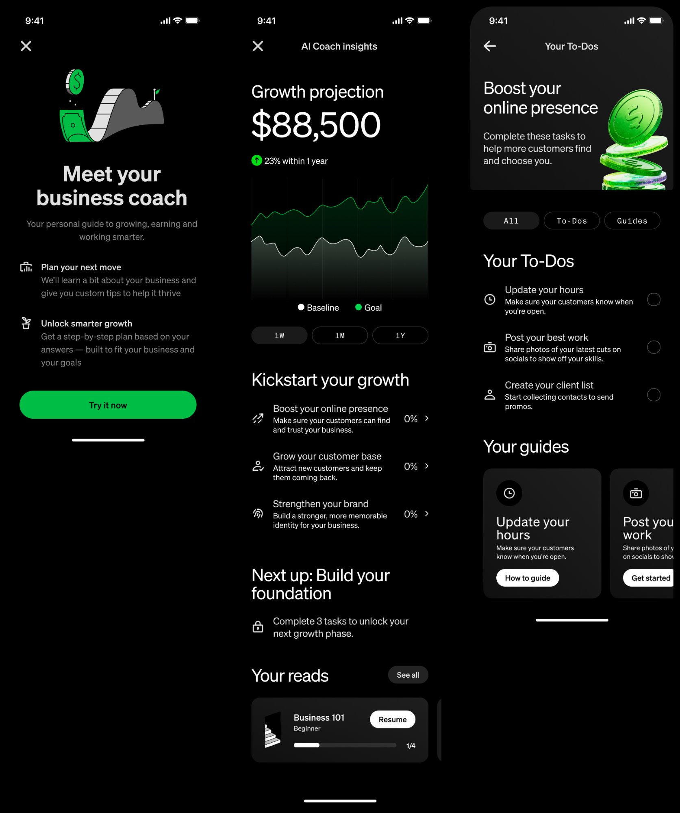
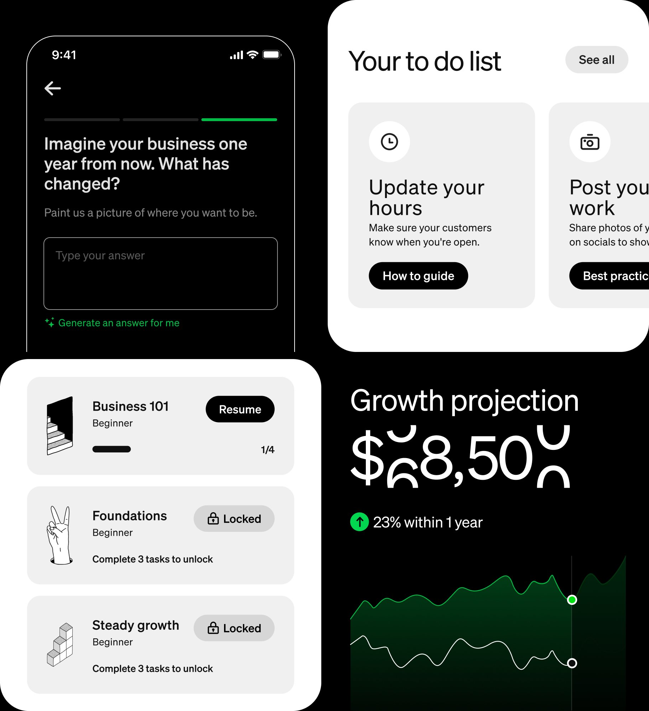
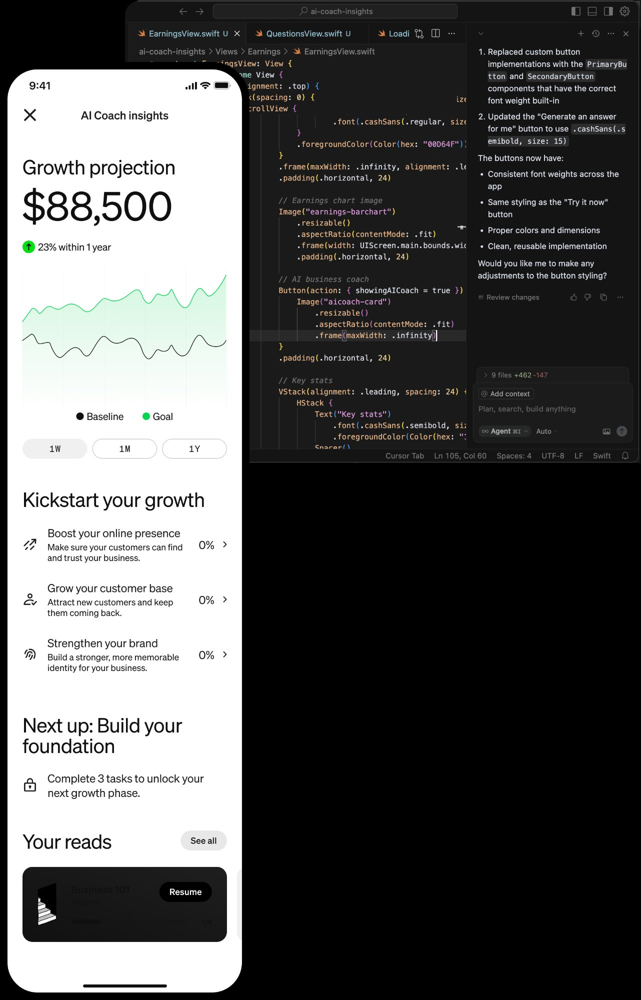

Afterpay · Hack Week · 2023
Designed and built a working AI-powered coaching prototype in under 24 hours. Upvoted by the Commerce design team and embedded in Cash App as a formal product exploration with the merchant team.
My role
Solo designer + prototype builder
Format
Hack Week. 24 hours
Result
Embedded in Cash App
Afterpay's merchant platform serves hundreds of thousands of small business owners, but the product had always been transactional: here are your sales, here are your customers. What it never did was tell merchants what to do next.
Most small business owners don't have a CFO, a marketing team or a growth strategist. They're running everything themselves. During my own customer research conversations I heard the same thing repeatedly: "I know something's not working, I just don't know what to fix first." That gap became the brief for Hack Week.
An AI-powered business coach embedded in the Afterpay merchant app. Rather than surfacing generic advice, the coach reads a business owner's own sales data and surfaces their single most impactful next action. with a concrete plan to act on it.
The experience had three layers: a growth projection that showed what the business could achieve; a coaching dashboard that broke growth into three strategic pillars; and a personalised task list that gave merchants one clear thing to do each day.


One next action, not a list of everything. The biggest trap in coaching products is overwhelming users with options. The AI Coach deliberately surfaces a single priority. the thing that will move the needle most given where the business is right now.
Data the merchant already has. The insights were grounded in real sales and customer data, not generic advice. This made recommendations feel personal and credible rather than generic.
Progress, not just information. The gamified task completion and locked growth phases were designed to create habit and return visits. applying the Hook model to a business tool context.
